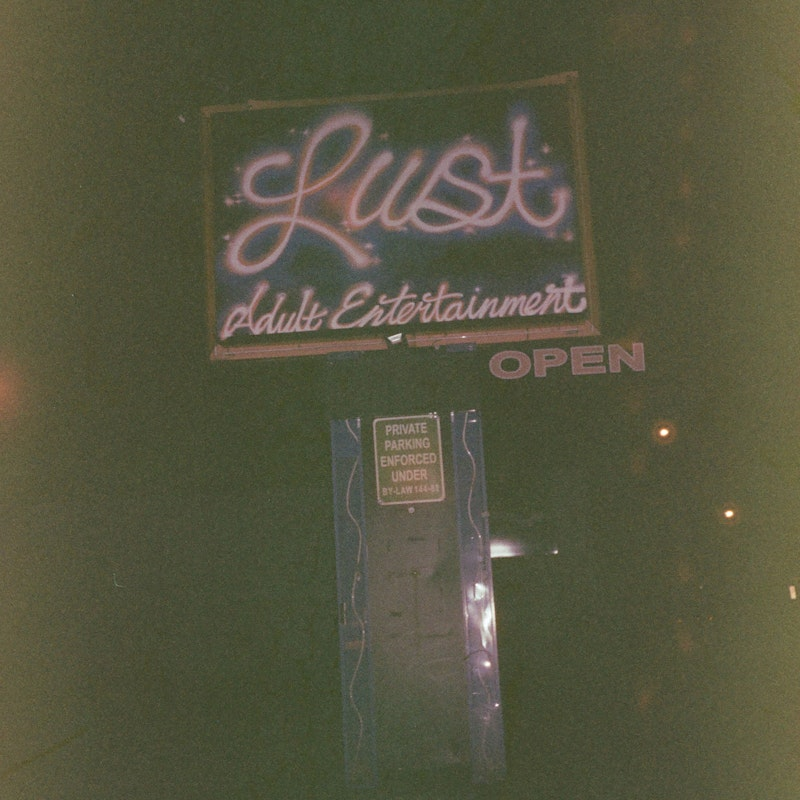

without u
jake kiss
►
Credits
Written by Jake Kiss
Produced by [PRODUCER]
Released June 26 2026
℗ © 2026 Breakfast Club Records
Produced by [PRODUCER]
Released June 26 2026
℗ © 2026 Breakfast Club Records
Lyrics
[PASTE LYRICS HERE]